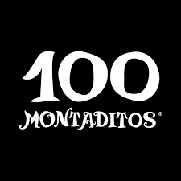
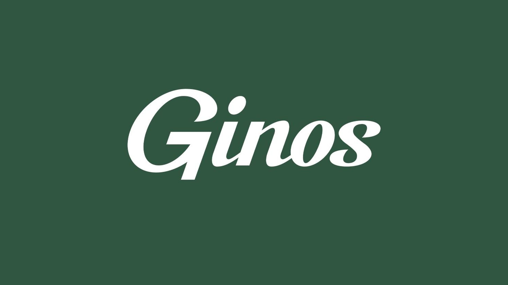
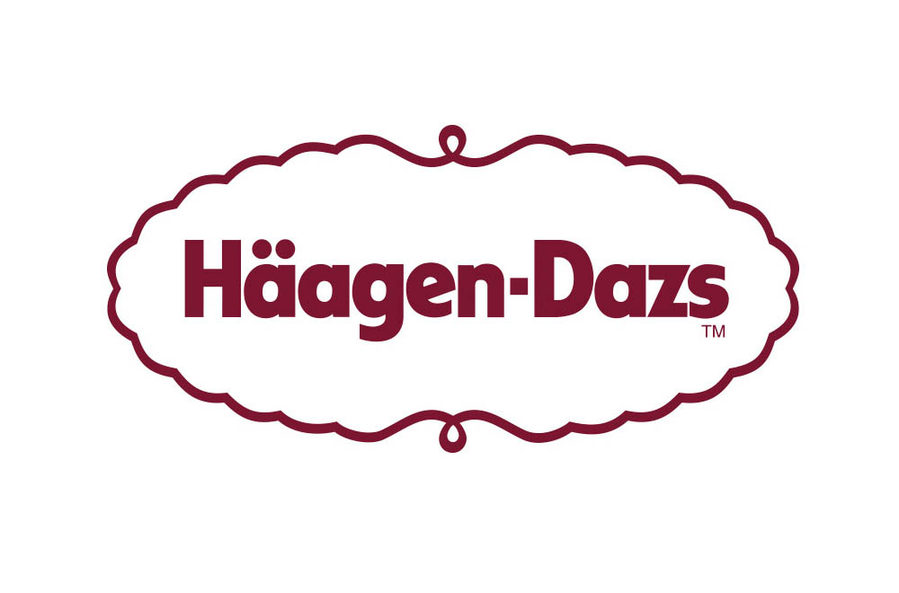
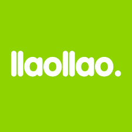
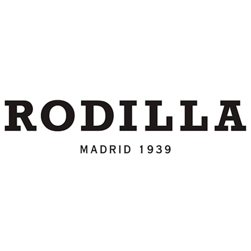
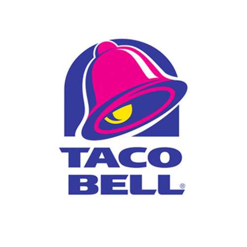

BURGUER KING

Burger King, también conocida como BK, es una cadena de restaurantes de comida rápida estadounidense especializada en la elaboración de hamburguesas.
CERVECERÍA 100 MONTADITOS
CERVECERIA 100 MONTADITOS es un innovador concepto de restauración basado en una variada oferta de 100 montaditos de diversos productos al precio único de 1€. Ofrece al consumidor una modalidad de alimentación sana que se combina con los factores de comodidad, rapidez y alto grado de atención al cliente.
DUNKIN COFFEE

Puesto que el café se considera cada día más como un bien de primera necesidad, el programa Tree-to-Cup de Dunkin’ Coffee es un planteamiento revolucionario en la gestión del café. La empresa establece y monitoriza proactivamente estrictos controles de calidad, desde los cafetales al resto de toda la cadena de producción cafetera.
GINOS
Saborea deliciosas pizzas estiradas a mano, pastas salteadas al momento con auténticas recetas tradicionales e ingredientes traídos desde Italia.
GOIKO

En Goiko sabemos que las hamburguesas más ricas siempre manchan. Eso es así. Para nosotros, el chorreo es ese momentazo en el que el queso se derrama, la yema de huevo explota tiñéndolo todo y, justo en ese instante, no importa nada más.
HÄAGEN-DAZS
Häagen-Dazs es una marca de helados estadounidense establecida por Reuben y Rose Mattus en The Bronx, Nueva York, en 1960. Comenzando con solo tres sabores: vainilla, chocolate y café, la compañía abrió su primera tienda minorista en Brooklyn, Nueva York. York, el 15 de noviembre de 1976.
LA TAGLIATELLA

Para disfrutar de la auténtica comida italiana, ven al restaurante italiano La Tagliatella. Las amplias raciones de este restaurante pizzería son perfectas para degustar en compañía y cuentas con unos ingredientes de alta calidad.
LLAOLLAO
Disfruta del yogur helado llaollao y vive la experiencia más natural con los toppings más deliciosos, todas las salsas que puedas imaginar, la fruta más fresca y, por supuesto, el frozen yogurt más nutritivo y refrescante.
McDonald'S

McDonald's es una franquicia de restaurantes de comida rápida estadounidense. Sus principales productos son las hamburguesas, las patatas fritas, los menús para el desayuno y los refrescos. También se encuentra una oferta disponible de batidos, helados, postres y ensaladas de fruta o de verdura
RODILLA
Rodilla es una franquicia española de comida rápida especializada en sándwiches. Fue fundada en 1939 a partir de un negocio local en la plaza del Callao y en los años 1990 comenzó su expansión a otras ciudades españolas.
STARBUCKS

Starbucks Corporation es una cadena internacional de café fundada en Washington. Es la compañía de café más grande del mundo, con más de 24 000 locales en 70 países.
TACO BELL
En Taco Bell podrás disfrutar desde entrantes para compartir, menús, productos individuales y postres. Tacos, burritos, quesadillas y crunchy wraps hacen que nuestra oferta sea amplia y variada. Ah! Y no te olvides de rellenar gratis las veces que quieras tu refresco.
VIPS

¿Se acerca la hora de comer y no sabes qué elegir? Tenemos para ti, desayunos, comidas, meriendas o cenas ideal para tu paladar. A donde quieras ir, ve con VIPS.